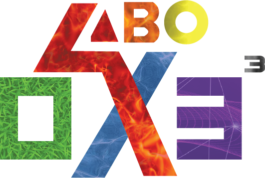
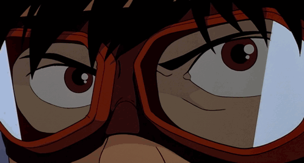
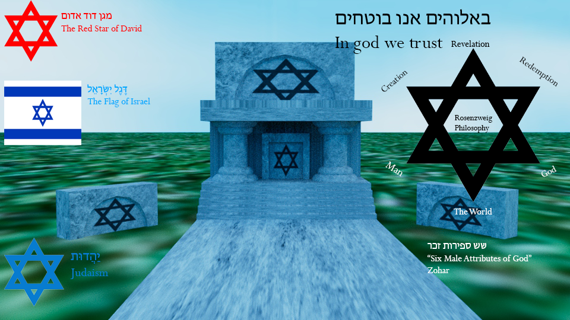
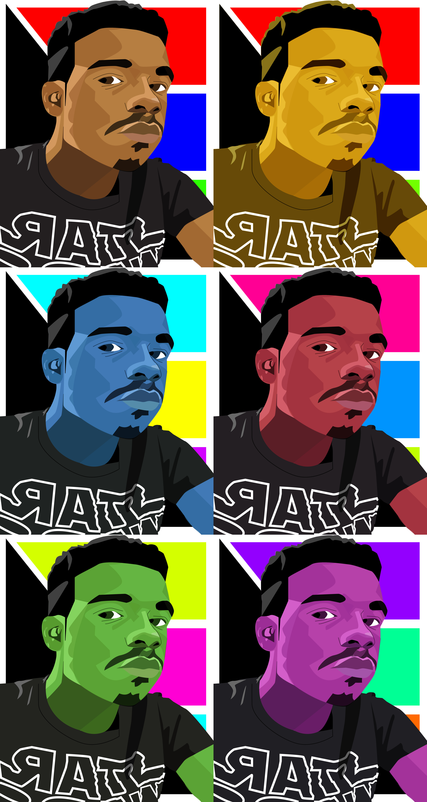
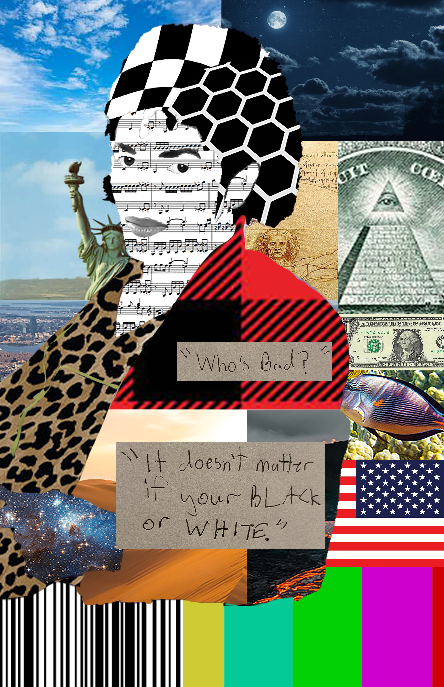
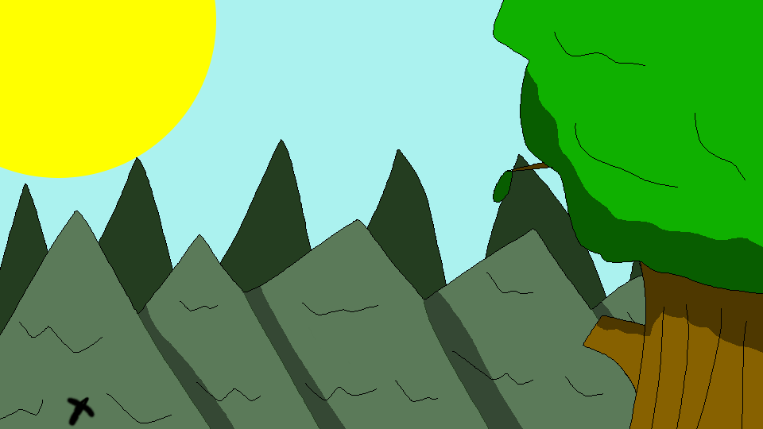
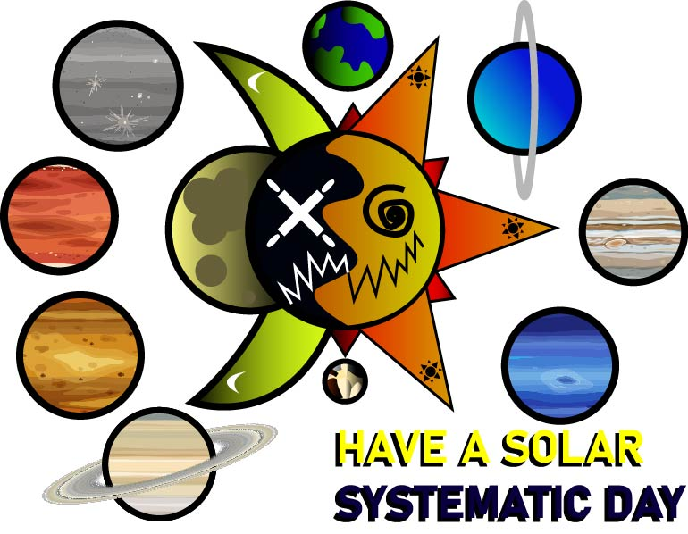
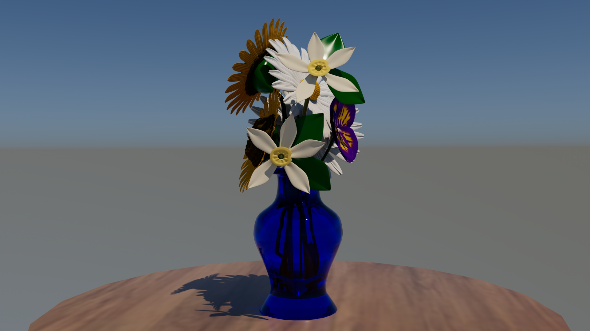
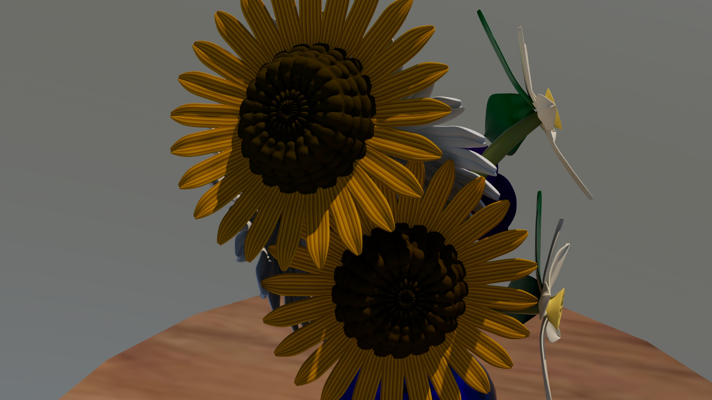
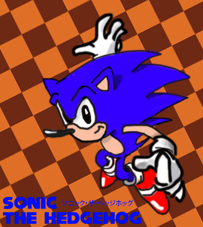

Projects
What you see here is a collection of my finest and strongest works I've did throughout my college years and free time.

ABO-X030303 (Abreviated as ABOX03 cubed) is a tech demo film I created using various programs such as Adobe Creative Suite (Photoshop, Illustrator, After Effects, and Premiere Pro) and Autodesk Maya to make this masterpiece possible. What's presented here is a combination of animations such as 2D and 3D styles, all in one film.
The Process Behind the Demo
I built inspiration for this project through variousmedia such as animated films and video games for this projects. Mostly media from the 80s - 2000s in terms of animation and 3D modeling. The 2D Assets for the Pistol Sequence were created in Adobe Illustrator with a few layers into one composition, so that I could animate it. Some and rest of the animated assets for the sequences are images and created originally in After Effects. The Logo was made from Illustrator by masking each texture while making the letters. I installed custom fonts in preparation for this project, and even added motion blur effects to them, and 3D animation. For the 3D sequences, I used models off of SketchFab, and even made models of my own, such as the bikes. For some models, I started out as a cube and then extruded and smoothed them out to create an entirely new mesh.
3D Modeling: Before I modeled out the 3D Models for the Bikes, I had to come up with some blueprints. In order to flesh them out and bring them to life, I asked Gemini to look at my sketches and blueprints to show me what they would look like in 3D. At the same time, I renovated it to make it look like I did the design myself. I took inspiration from games and films such as Akira, Shadow the Hedgehog bike, and Tron, and then assimilated the game consoles to create something original.
Animation: Before I started animating 3D segment, I made a storyboard visually, and then determined on how I wanted each model and asset animated. I recorded every keyframe of the mesh and then after everything was finished animating, I tweaked everything up so that nothing looked off. I wanted to make sure everything was perfect, and felt less rushed. For the 2D segment, it was pretty straightforward because I wasn't trying to animate 3D objects and assets in a viewport and animate every movement. For the most part given the environment, I was able to easily add effects for both 2D and 3D compositions without having to rely on Autodesk Maya. Essentially, the difference between 2D and 3D is that less headaches, and better workload.
After Effects: I used After Effects for not only Motion Graphics and Animation, but also had used it for rendering the movie which consited of compliations with each one having an animation, fade in/out transition, and other effects. I had also used it to add VFX to the 3D Animation segment, where my PC Bike is doing the Akira Bike Slide with blue thunder effects. Another instance I used After Effects for compositioning was to make a GIF for a digital billboard for my 3D Digital City Segment as animated textures for Autodesk Maya to better convey NYC and Tokyo. Lastly, I used it to add a staff roll to credit what's mine and what isn't mine to avoid copyright infringment, as well as plagirism.
Premiere Pro: Similar to After Effects, I had used Premiere Pro to make animated textures for Autodesk Maya, and then exporting them. I also used it to export the final and last version of my tech demo film.
FUN FACT: Did you know that I made my PC Bike to the Akira Bike slide, which is a popular trend? Before the climax of the 3D Segment, I decided to do something kinda special.


College Projects

IICT (If It Could Talk) Plan
This piece explores the symbolism, mythology, and philosophical depth behind the Star of David, a central emblem in Judaism and Israeli identity. The artwork reimagines the Star as a monument surrounded by various representations of its meanings throughout history—from the Red Star of David and the Flag of Israel to philosophical interpretations inspired by Rosenzweig’s ideas. The Hebrew inscription “באלוהים אנו בוטחים” (“In God We Trust”) reinforces the spiritual and cultural connection between faith, humanity, and the divine. I used Maya for 3D Modeling and Rendering, Illustrator for a few assets, and Photoshop for adding the text and images.
Digital Portraits & Color Variations


For this project, I was tasked to make a digital portrait of my favorite selfie or portrait. Similar for the grayscale portrait, I chose one of my favorite selfies from High School back in 2018 because of how aesthetic it looks. For this, I used both Illustrator and Photoshop. I used Illustrator for making the shapes and portrait, while I used Photoshop for different color variations. I did my absolute best to replicate it with my artistic skills. The colors are vibrant, and the shapes do a good job imitating the selfie I took.
Digital Collage

For this project, we were tasked to make a digital collage by choosing one of our favorite artists, images that related to him/her and add a message. For this, I chose Michael Jackson because I can find lots of things that relate to him that has to do with nature, and globally. Most of these images are from the internet, while the two ones with the messages were by me. Techniques I used were distortion and warping to make it fit.
Animated GIF

This right here is a short animated gif of a Falcon diving off-screen after ascending to the sky. I made this using Photoshop, using a lot of layers to make framed animations.
 Bouncing Ball
Bouncing Ball
For this project in my animation class, we were tasked to make a a short film of a ball that appears to be a creature in a obstacle. In it, he's jumping around the obstacle hopping on blocks and when he completes the obstacle, he does a little dance out of excitement and enjoyment! I rendered out every frame image in Maya and then I put them all together as a mp4 in Premiere Pro.
Secret Colors of Lives
For this project, we were tasked to make a film about the history of our chosen color from the book "Secret Lives of Colors". I chose the color Electric Blue, since blue is one of my favorite colors. Before I could get to work, I read the book and did additional research. I used After Effects for motion graphics and visual storytelling, and I used Microsoft Paint for digital assets.
Original Movie
For my Digital Media class, I was tasked to make an original movie. It's called The Essence of Art. What I did was make an animated film to highlight on what I'm technically capable of. I was originally going to animated everything in Maya, but couldn't due to technical limitations and time restraints. But in the video, it shows my own explanation of art and as you can see, it shows the art that I've previously done over the years, as well as animations. I used After Effectis for Motion Graphics & Microsoft Paint for digital assets.
Smiley Face

For this project, we were tasked to make an original smiley face with a pun or greeting. I based mine on a music album cover for a song called Musik Mo by DJ Ron, which is packed with Jungle/Electric/Techno music. I also based it on the Solar System by making the half of it night time with a moon and dark side, while the other side is sunny and light, as well as vibrant. Around it are planets of the solar system. This is one of my favorite projects because I made something original that stands out that could be used for either a music cover album or video game asset or packaging.
Bubbles

For one of the next projects, we were tasked to choose anything whether it be a cartoon character, or anything and then make it out of bubbles. For this, I chose my most favorite video game character, Sonic the Hedgehog. This was one of the fun projects I have ever done because I did a great job replicating Sonic based on reference artwork.
Flower Vase


This project was about making a Flower Vase. Basically what we had to do was choose some flowers to include in a vase and model them out. What I learned to was make meshes out of lines which created the stem. I learned how to make a flower petal by using a square, smoothing it out into a mesh and then adding edges and extruding it. Not to mention resizing it. I did the same thing for the core of the flower. Another thing I learned was "duplicate special" where I could choose how many meshes I wanted and then paste them. I even rotated them and aligned them to make a perfect flower. After I finished every flower, I took about a few screenshots. The front and the rear.
Walking Eyeball Monster

This was the final project for the 3D Animation class I took at TCNJ. With this, we were tasked of making a Eyeball Monster run and jump inside a box. We were provided a Eyeball Monster, and for me personally, duplicated 3 more to make it stand out. I used everything in that class I learned to the test, and did my absolute best to make it stand out. Even though there's no sound in this one, I gave it squashy stretch effects as if it were some kind of cartoon. I rendered every frame in Maya, and then made the mp4 in Premiere Pro.
Personal Work
Fanmade Sonic the Hedgehog Art
Though not a college project, this is something I did for fun. As a kid, I loved playing Sonic alot and in fact, am a Sonic fan. I took reference from two sources. This is based off of a manual artwork from a Sonic game "Knuckles Chaotix" and a sketch I did in 2019. So I combined those two together and recreated it digitally.

Smash Blender Animation
I was working on an animation mod for SSBU mods, since people on GameBanana and Smash Ultimate Modding Community have the ability to mod the game through custom hardware. So what I did here was import an animation into Blender, edited the Keyframes, baked and exported the animation, and put it into Smash Ultimate. After Blender, I imported it into a program called SSBH, which shows me what the animation will look like in game. It isn't intetionally glitchy. What you see on the face is the expressions layered on one another.